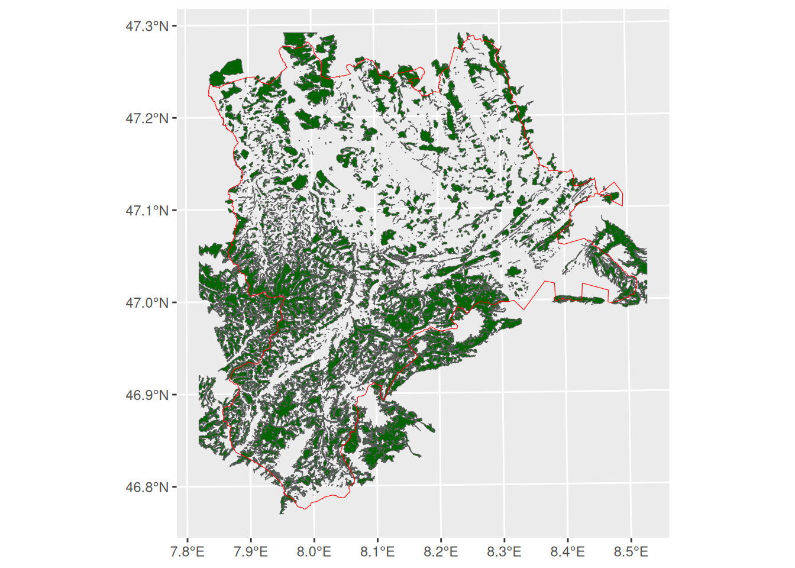
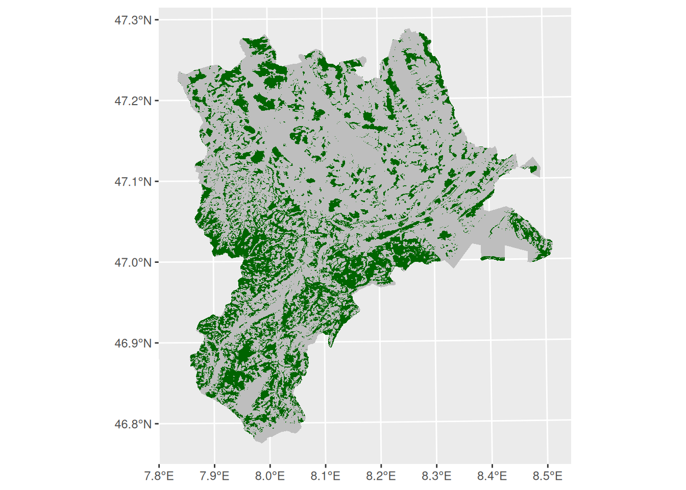

tlm3d_path <- "data/Spatial_Analysis_II/swiss_TLM3D.gpkg"
tlm_seen <- read_sf(
tlm3d_path,
query = "SELECT objektart, geom FROM tlm_bb WHERE objektart = 'Stehende Gewaesser'"
)Spatial Vector Operation
Thematic queries
- SQL queries can be performed with file import
- However, datasets can also be queried after import using
data.framemethods (such as[ordplyr::filter)
tlm_bb <- read_sf(tlm3d_path, "tlm_bb")
# Subsetting with base-R
tlm_seen <- tlm_bb[tlm_bb$objektart == "Stehende Gewaesser", ]
# Subsetting using dplyr::filter
tlm_seen <- filter(tlm_bb, objektart == "Stehende Gewaesser")Spatial queries using binary predicate functions
Take the following example:
Select all forests in the canton of Luzern
- Spatial query functions include:
st_contains(),st_contains(),st_contains(),st_contains(), and many more - These spatial queries are called geometric binary predicates
- This family of functions return so called sparse matrices: a
listthe same length asx, which, for each element inx, contains the indices ofywhere the condition is met. For example: - They could return cross matrices, but these usually have a larger memory, since they have are \(x \times y\) in size
luzern <- read_sf("data/Spatial_Analysis_II/swissBOUNDARIES3D.gpkg")
tlm_wald <- filter(tlm_bb, objektart == "Wald")
# The dataset already has this crs (2056), but apparently
# does not realize this
tlm_wald <- st_set_crs(tlm_wald, 2056)
query_res <- st_intersects(tlm_wald, luzern)# Note the length of the output equals nrow(tlm_wald)
query_resSparse geometry binary predicate list of length 8096, where the
predicate was `intersects'
first 10 elements:
1: (empty)
2: (empty)
3: (empty)
4: (empty)
5: (empty)
6: (empty)
7: (empty)
8: (empty)
9: (empty)
10: (empty)- (The first 10 elements are empty, because these are not within Luzern)
- This list can be used to subset
x(TRUEwhere the list is not empty):
# Note the use of lenghts (with an s) to get the length of each element in the
# list
wald_luzern <- tlm_wald[lengths(query_res) > 0,]
ggplot(luzern) +
geom_sf(data = wald_luzern, fill = "darkgreen") +
geom_sf(color = "red", fill = NA)

st_intersects. If even a small part of a forest feature is within Luzern, this feature intersects Luzern and is therefore retained. To query only forests that are completly within Luzern, use st_within().
Spatial queries using [ or st_filter
- The code above was for illustration purposes. The code can be written more concise:
# using sf-methods in base-R
tlm_wald[luzern,, op = st_intersects]
# using st_filter
st_filter(tlm_wald, luzern, .predicate = st_intersects)- The default value for
opand .predicate isst_intersects, so these arguments could also have been omitted
Overlay Analysis
- In the example illustrated in Figure 3.1, we have the choice of subsetting forests that either intersect Luzern ever so slightly (
st_intersects), or that lie completely within Luzern (st_within). - Depending on the question, both options can be unsatisfactory (e.g. if the question was Which percentage of Luzern is covered by forest?)
- For some cases, it might be necessary to “cut” the forest area at the cantons border
- This can be achieved with
st_intersection(which is different fromintersects) - There are several other functions that work on pairs of geometries. See Geometric operations on pairs of simple feature geometry sets
- There are even more functions that work on single geometries, e.g.
st_buffer. See Geometric unary operations on simple feature geometry sets
library(glue)
library(scales)
wald_luzern2 <- st_intersection(luzern, wald_luzern)
ggplot(luzern) +
geom_sf(fill = "gray", color = NA) +
geom_sf(data = wald_luzern2, fill = "darkgreen", color = NA)
- Now, it’s possible to compute the area of Luzern and the forest that intersects Luzern using the function
st_area. - There are several functions to compute geometric measurements of
sf-objects.
sum(st_area(wald_luzern2))/st_area(luzern)0.2721733 [1]🪕 Tasks
From the exercise in Spatial Analysis I, solve the following tasks using R:
- Task 2: Thematic Selections (Select by Attributes)
- Task 3: Exporting Selected Features to a New
Layersfobject - Task 6: Intersect (Intersection)
- Task 8: Buffer
- Task 9: Spatial Selection (Select by Location)